Csontváry Kosztka Tivadar · Vihar a nagy Hortobágyon · 1903
Élő festmény
Hogyan lesz egy festményből bejárható, szekérrel járható világ. A háttérben most is a játék motorja fut: görgess, és a kamera fejezetről fejezetre oda repül, amiről szó van.
I. fejezet
Egy festő, egy kéz
Az ötlet a Starry Nightrider-ből jött, ahol Van Gogh Csillagos éjének falujában lehet biciklizni. Letöltöttük és szétszedtük a játék fájljait. Kiderült, hogy nincs benne Gauss-splat: a világ egyszerű, kódból épített geometria, és szinte minden hatást egyetlen nagy ecsetvonás-shader ad.
A mi változatunk magyar festményre épül. Már az elején eldőlt a legfontosabb szabály: csak Csontváry. Más festők stílusa nem keveredhet a világba, és Csontváryt sem festjük más kezével, vagyis nincs Van Gogh-örvény az égen.
Miért three.js?
Gauss-splat (Idol): egy képből egyetlen tárgyat ad, a fény bele van égetve, és nem lehet egész tájat építeni belőle.
Helios (saját UE5-szerű Rust/WebGPU motor): fotorealisztikus képalkotásra készült, egy festményhez túl sok, és a shaderek fordítása percekig is eltarthat.
three.js r187, WebGL2, build lépés nélkül: ugyanaz a felépítés, ami a Van Gogh-játékban is bevált. A festői hatás teljes egészében saját shaderekből jön.
II. fejezet
A festmény közelről
Mielőtt bármit megfestettünk, közelről átnéztük a szkennelést (3429 × 1755 képpont). Ezek a megfigyelések lettek a motor szabályai.
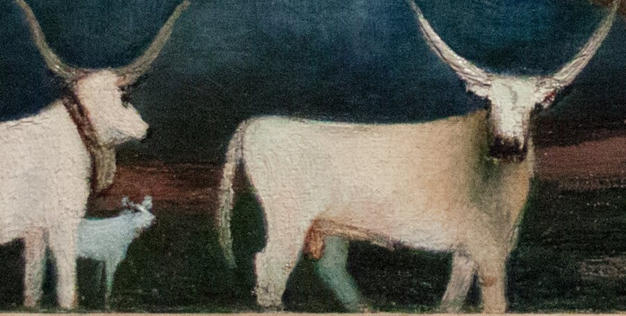
Impasztó csak a fehéren. A marhák szőre szemcsés, vastagon felrakott fehér festék, a sötét víz vékony, és átüt rajta a vászon.
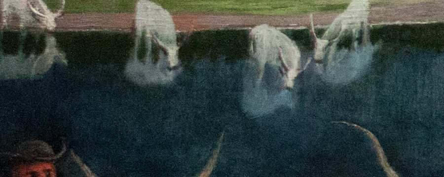
A tükörkép függőlegesen elkenődik. Áttetsző, szellemszerű, a víz szinte mozdulatlan.
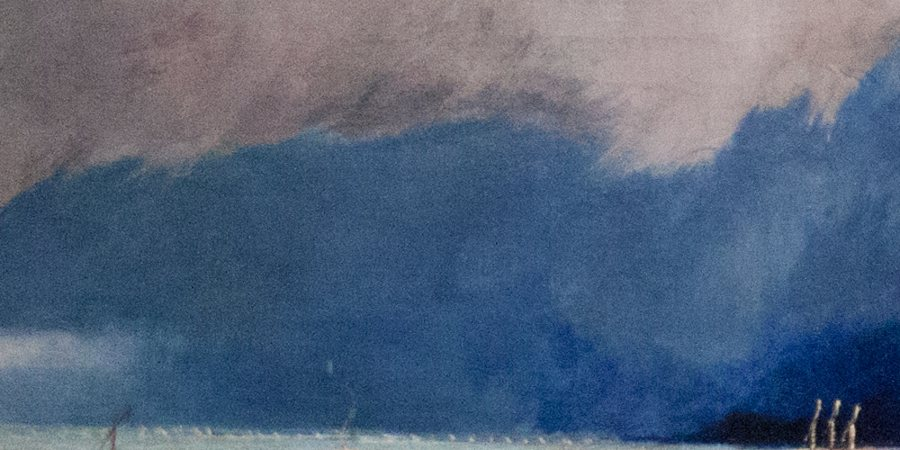
Nincs ecsetfolt-minta az égen. Nedvesen egymásba dolgozott tömegek, rongyos, szárazecsetes szélekkel.
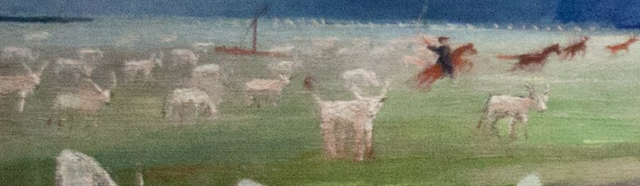
A puszta vízszintes, puha sávokból áll. A távol nem szürkül el, inkább világít.
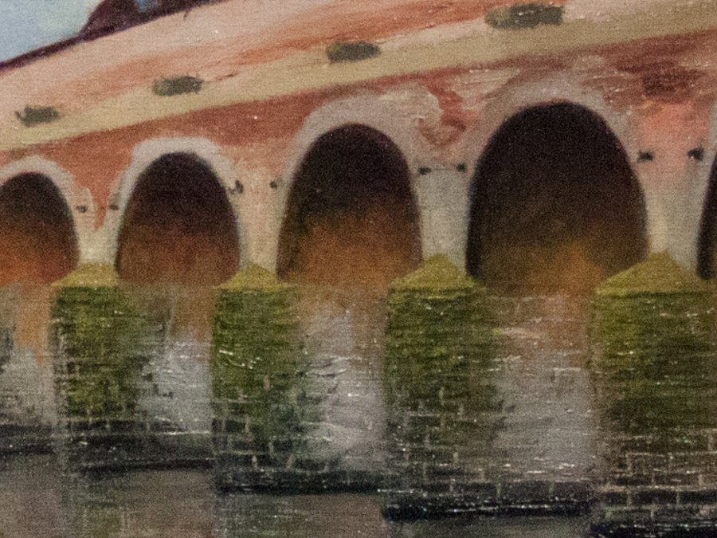
A híd lazacrózsaszín, száraz vízszintes húzásokkal. Az ívek belsejében narancsbarna izzás van, a pilléreken mohazöld.
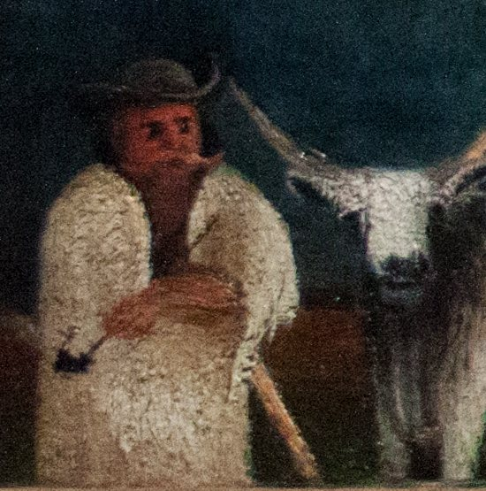
Naiv, lapos alakok. Egytónusú test, amely csak a széle felé sötétedik. Kerek, piros arc. Vetett árnyék nincs.
Közös szín- és tónusszabályok: sötét előtér-sáv keretez alul, a középső sík világít, az ég kettéválik (hideg vihar balra, meleg derülés jobbra). Egymás mellett komplementer párok állnak: rózsaszín híd a zöld mohával, kék vihar a narancs éggel, fehér marha a kékesfekete vízzel.
III. fejezet
Amit a szakértők mondanak
A Szépművészeti Múzeum Csontváry 170 kiállításáról tizenhárom videót néztünk át. Kilencnek volt felirata. A 66 perces kerekasztal-beszélgetésnek nem volt, ezért helyben, Whisperrel (large-v3, magyar nyelv) átírtuk egy RTX 3090-en.
„A festésmód nem egyenletes, hanem néhány helyen nagyon vastag.”Szűcs György · kerekasztal, 0:39:59
„…szinte érezte az ember azt a technikát, amivel megküzdött a vászonnal, a festékrétegeket, a színeket, ahogy egymásra tette.”Gergely Mariann, a kiállítás kurátora · 0:08:20
Az üres vásznat sem fehérnek festi, hanem „a sárga, a kék és a zöld árnyalataiban”.Bellák Gábor · Beszédes önarckép
A vihart a Hortobágyról tartott diaképes előadás alapján festette meg. Levélben kérdezte meg a fényképészt, melyek a táj „legkarakteresebb motívumai”. A nagy vásznakat valószínűleg műteremben festette, vázlat, fénykép és helyszíni élmény alapján.
„Nincs csontvári kód.” · „Nem képrejtvényeket festett.”Szűcs György 0:45:23 · Bellák Gábor 0:43:30
Egy tanulmány a Viharban rejtett Toldi-történetet és állatövet lát. A szakma az ilyen „megfejtéseket” félrevezetőnek tartja, ezért a játék nem épül rájuk.
IV. fejezet
Az ég: a festmény kupolája
Az égbolt maga a festmény: egy kupolára vetítjük, pontosan onnan nézve, ahonnan a festő nézett (66° látószög, a horizont a kép 39%-ánál). Hogy a 3D híd és a lovasok kétszer ne látszódjanak, az égből kiretusáltuk a hidat, a lovasokat és a gémeskutakat. A retust egy képszerkesztő modell készítette (gpt-image-2.6 edit, medium minőség), de csak a maszkolt égrészt használjuk fel belőle. Minden más Csontváry saját festéke.
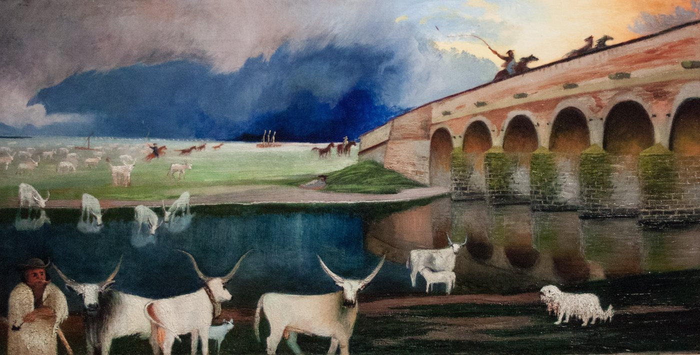
Az eredeti szkennelés (Wikimedia Commons, közkincs).
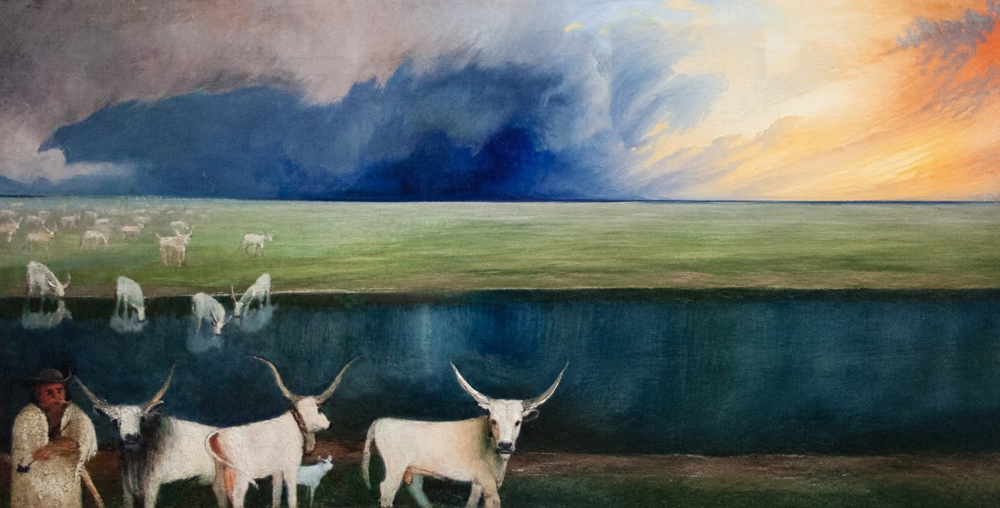
Az ég önmagában: a viharfal és a naplemente híd nélkül fut le a horizontig.
A kupola többi részét a festmény saját színei töltik ki: nyugaton a viharfal folytatódik, keleten a narancs derülés, a hátunk mögött ibolyás alkony. A vászon széles, felhő alakú, szabálytalan sávban, egyre elmosottabban olvad bele a kupolába, így sehol nem látszik a kép széle. A viharban villámok csapnak le, a mennydörgés pár másodperc késéssel érkezik.
Játék közben minden leadott napfénycsepp kicsit hátrébb szorítja a vihart.
V. fejezet
Belépés a festménybe
A játék egy galériában kezdődik: a festmény aranykeretben lóg a falon. Belépéskor a kép kitölti a képernyőt, és egy lassú, nedves festékfront vonul át rajta, amely mögött már az élő világ látszik.
Az előtér alakjait a festmény képpontjaiból számoltuk vissza a talajra: a nagy ökröt balra, a borjas tehenet, a jobb oldali ökröt, a komondort és a pásztort. Mindegyik ott áll, és arra néz, ahol a festményen, ezért az átmenet közben a festett és a 3D alakok nagyjából fedik egymást.
Húzd a fenti csúszkát, vagy figyeld a hátteret: most félúton jár az átmenet.
VI. fejezet
Az ecset
A világ minden felületét ugyanaz a kéz festi: két réteg ecsetvonás, mindegyik a tárgy saját színével, a festményről mért palettán tónusozva. A vonások iránya a felülettől függ:
a pusztán hosszú, vízszintes, ahogy ő festette a síkságot;
a háztetőn a lejtővel fut, a falakon vízszintes;
a fatörzsön függőleges, az állat testén hosszanti.
A vonások mérete a vásznon állandó. Minden mérethez rögzített minta tartozik, és ahogy a felület távolodik, a minták egymásba úsznak. A távoli puszta végül puha, világító színsávokká olvad.
Maguk a vonások egy kódból generált ecsetlapról jönnek. Nyolc nyomot tartalmaz: hosszú húzást, rövid, kerek nyomást és ívelt vonást. Mindegyikben benne van a festék vastagsága, a határa és egy második szín csíkja. Az ötlet az „Oil paint” nyílt projektből jön (MIT), de Csontváry vékony festékéhez laposabbra vettük.
A vonás: a festék helye világos, a vastagsága melegebb, a második szín csíkja kékes.
VII. fejezet
Szín, nem fény
Minden tárgyat három keverékből festünk: fény, féltónus és árnyék. Minden vonás a megvilágítása szerint választ közülük, a határ vonásról vonásra kicsit máshová esik. Így a fény egész festékfoltokban törik, nem sima 3D-s átmenetben. Pontosan ilyenek Csontváry naiv, egytónusú zónái.
Az árnyék hideg: kékes-ibolyás, mert az eget és a vizet tükrözi.
Nincs semleges fehér. A napos fehér sárgás, az árnyékos kékes-zöldes.
A vetett árnyékból csak nyom marad (32%), mert a festményen nincs vetett árnyék. Azt is minden vonás egészben, a saját közepén veszi fel, így az árnyék széle rongyos, egész foltokból áll.
Kapcsold ki a három keveréket, és a híd azonnal számítógépesebb lesz.
VIII. fejezet
Az olajszűrő és a vászon
A kész képen még egy sor festői lépés fut végig:
Olajfesték-szűrő (általánosított Kuwahara, nyolc szektor): a 3D tárgyakat sima, festett foltokká olvasztja. Ettől lesznek a festmény részei, és nem tárgyak előtte.
Kézremegés: minden él kicsit hullámzik, mint egy ecsettel húzott vonal.
Egyenetlen festékdomborulat: a világos, vastag részeken erős, a sötét, vékony részeken gyenge.
Körvonal: ahol a mélység megtörik, ott nem vonal, hanem sötétebb szélsáv jelenik meg.
Vászonszövés: a vékony festéken átüt, a vastagon alig.
Sötét előtér-sáv alul, ahogy a festményt is keretezi.
Matt felület, lakk nélkül: a legvilágosabb részek a festék fehérjéig futnak ki, de soha nem túl rajta; a sötétek nem mélyülnek, inkább kicsit krétásak (lásd a XV. fejezetet).
IX. fejezet
Az állatok
A lovak, a marhák és a kutya csontvázzal animált, szabad licencű (CC0) modellek: Quaternius, Ultimate Animated Animals. Mindegyiket a festmény színeire festettük át.
A szürke marhák lírás szarvat kaptak a fejcsontjukra. Legelnek, isznak, sétálnak, és kitérnek a szekér elől.
A lovak Csontváry lovaihoz igazodnak: karcsúbbak és kicsit magasabbak a modellnél. A sebességtől függően lépnek, ügetnek vagy vágtáznak.
A hozzánk legközelebbi kilenc állat bőrére 140–320 festékfolt van tűzve. A foltok a csontokkal együtt mozognak: a testen hosszanti, a lábakon lefelé futó vonások. Csak ott jelennek meg, ahol a bőr felénk néz, így a sziluett tiszta marad.
X. fejezet
Emberek és lovasok
A pásztor a festmény szerint kerek, piros arcú, fekete bajszú, széles kalapú, és hosszú pipát tart. A pusztán csikósok vágtáznak a ménes körül. A cédrus körül zarándokmenet halad lépésben, ahogy a Zarándoklás a cédrusokhoz képen. A kis kőhídon lovas társaság kel át, a tóparton lovasok sétálnak, köztük két kék ruhás, széles kalapos hölgy. A vásárban, a csárda tornácán és a parton is vannak emberek.
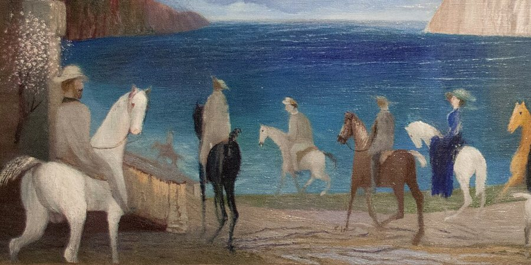
Tengerparti sétalovaglás (1909): karcsú, kis fejű, hosszú lábú lovak.
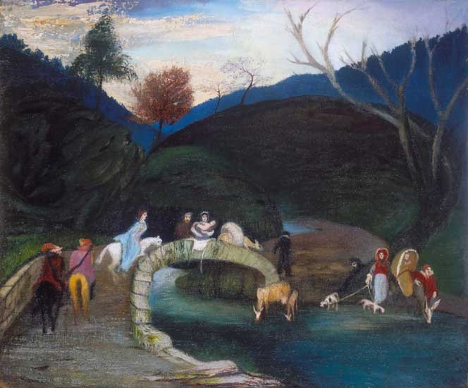
Hídon átvonuló társaság: a játékban ez a kis kőhíd a patak fölött.
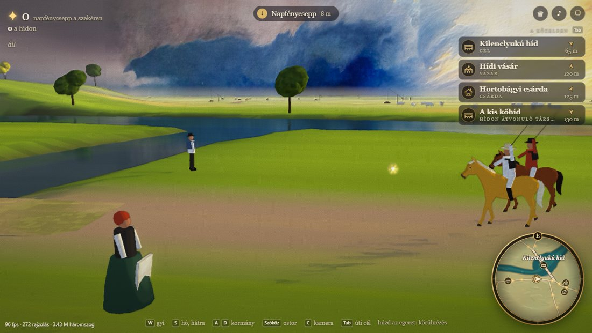
A játékban: a társaság oda-vissza kel át a hídon.
XI. fejezet
A világ: tizenkét festmény egy tájban
Csontváry ismert képeiből (a Wikipédia listáján 102 szerepel) tizenkettő épül be a világba. Egy közös, álomszerű földrajzban állnak, egymáshoz közel, hogy ne üres tájon kelljen szekerezni. A festmény saját látószögébe, észak felé csak az kerülhet, ami a képen is rajta van.
vízutakhidakútvonal az úthálózaton (a gémeskúthoz)
Festmény
Hol van a játékban
Vihar a nagy Hortobágyon (1903)
A világ közepe: az ég, a Kilenclyukú híd, a folyó, a gulya, a pásztor, a gémeskutak
Római híd Mosztárban (1903)
Mostar szurdoka, az egyívű kőhíd, fehér házak, torony, minaret
Tavasz Mosztárban (1903)
Virágzó fák Mostar házai között
Jajcei vízesés (1903)
Vízesés a szurdok falán, fölötte a villanytelep
Villanyvilágított fák Jajcéban (1903)
A Mostarba vezető út lámpasora, sárgászöldre világított fák
A magányos cédrus (1907)
A cédrus a dombtetőn, alatta a türkiz tó
Zarándoklás a cédrusokhoz (1907)
Lovas zarándokmenet a domb körül
Sétalovaglás a tengerparton (1909)
Lovasok a tóparti sétányon
Halászat Castellammaréban (1901)
Parti fal, lámpasor, halászok, lámpás csónakok, magas parti házak
Mandulás kőfalas teraszokkal a déli kunhalom körül
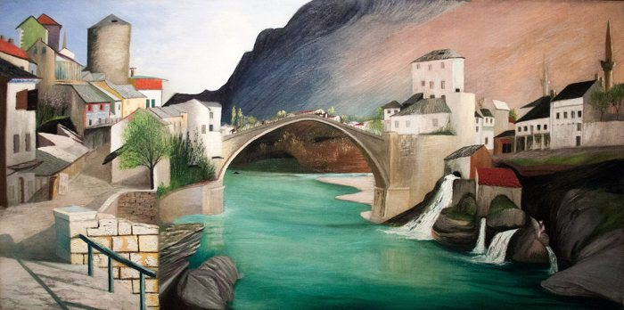
Római híd Mosztárban
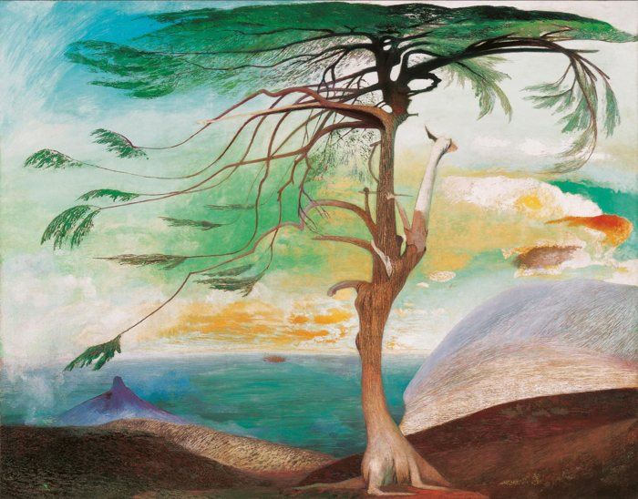
A magányos cédrus
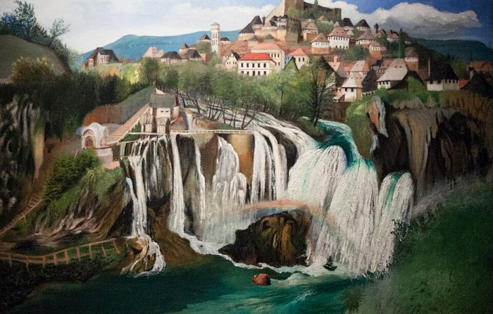
Jajcei vízesés
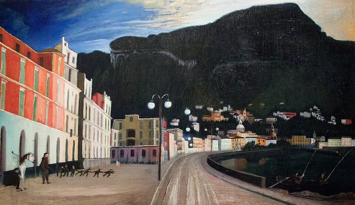
Halászat Castellammaréban
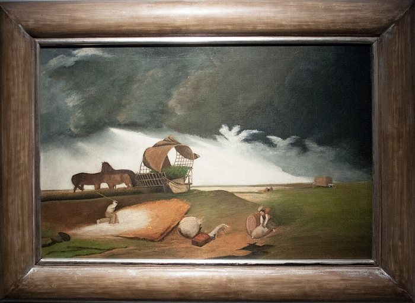
Vihar a pusztán
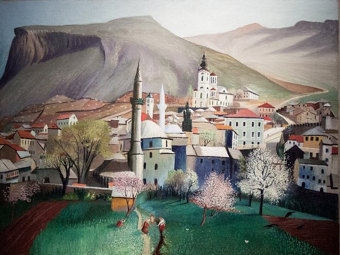
Tavasz Mosztárban
Stílusreferenciaként a Taormina, a Baalbek és a Selmecbánya képet is használtuk. Minden kép közkincs.
XII. fejezet
Fény, ami fény
A jajcei villanylámpák, a tóparti lámpasor, a csónakok lámpásai és a villanytelep ablakai nem fedő festékkel készülnek, hanem összeadódó vonásokkal: forró mag, nyolc szabálytalan, lassan lélegző sugár és puha gyűrű, ahogy Csontváry a villanyfényeit festette. A legközelebbi tizenkét lámpa a környező falakat, fákat és állatokat is melegre színezi.
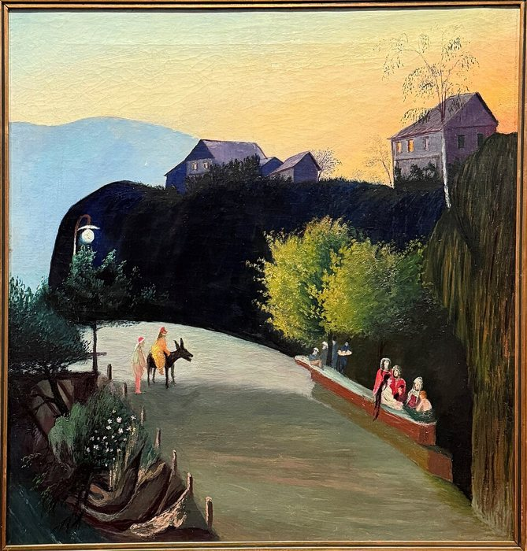
Villanyvilágított fák Jajcéban (1903)
XIII. fejezet
A játék: napút
Lovas szekérrel járod a tájat: W gyí, S hó, A/D kormány, Szóköz ostor (egy rövid vágta). A feladat: negyven napfénycseppet kell felvinni a Kilenclyukú hídra. Minden leadás visszaszorítja a vihart, és amikor mind megvan, a vihar elvonul. Ez Csontváry „napút”-ja.
Útvonaltervező: a listából kiválasztott helyhez az utakon vezet. A folyón csak hídon át visz, fél másodpercenként újratervez, és a minitérkép arany pontsorral mutatja az utat.
Kezelőfelület: festett minitérkép aranykeretben, helyszínlista (Tab vagy kattintás) és helyi ranglista.
Hangok: mind kódból szintetizáltak. Szél, paták (a hídon kopogósabbak), kerékzörgés, ostorcsattanás, mennydörgés és gulyabőgés.
XIV. fejezet
Nyugodt festék
Egy festői motor legnagyobb ellensége a „mászó” festék: ha a kamera mozgására a vonások maguktól remegnek, az nem festmény, hanem zaj. Ezért mérjük. A világot megállítjuk, a kamerát apró lépésekben előre visszük, és megnézzük, mennyit változik a kép képpontonként.
Kamera elmozdulása
Változás (0–255)
0 (álló kép)
0,00
0,5 cm
0,19
2 cm
0,60
8 cm
1,96
A változás a mozgással együtt nő, tehát a festék nem remeg magától. Az olajszűrő ráadásul nyugtat: 2 cm-es lépésnél kikapcsolva 0,65, bekapcsolva 0,60, erősebb fokozaton 0,54.
Eszközök: tools/steady.mjs (remegésmérő) és tools/shot.mjs (elszigetelt képernyőképek kézzel léptetett képkockákkal).
XV. fejezet
Vonalkák és matt festék
A Vihar ege és pusztája nedvesen egymásba dolgozott, sima festék. Ami viszont kiemelkedik a síkból, azt Csontváry másképp festette: a Magányos cédrus dombjait és a mostari hegyet rövid, vékony, párhuzamos vonalkákból rakta össze, amelyek a formát követik.
A vonalkák iránya a forma. A cédrus dombján és a kunhalmokon körbefutnak, mint a szintvonalak. A mostari hegyen ferdén futnak le, ahogy a gerinc esik. A szurdok szikláin vízszintes sorokban állnak.
Finom tónuskülönbség. Minden vonalka egy árnyalattal világosabb vagy sötétebb, melegebb vagy hidegebb a szomszédjánál, ettől a felület enyhén vibrál. Az okkeren néha sötét vonás ül, a sötét földben tiszta vörös és zöld pötty.
Az átmenet nem keverék. A hegy árnyékos indigója és napos lazacszíne között nincs sima színátmenet: a két szín egész vonalkái váltják egymást, ahogy a vásznon.
Matt felület. Csontváry nem lakkozta a képeit, és az 1964-es, 1967-es vizsgálat szerint az olajfestéket többször temperával keverte, hogy a szín „tiszta, olajmentes, pasztellesen világító” legyen. Ezért a játék képén nincs lakkos mélység: a sötétek kicsit krétásak, a színek tiszták.
Kapcsold ki a vonalkákat: a hegy és a szurdok fala sima, számítógépes lejtő lesz.
Minden képnek a saját fénye. A Viharon nincs vetett árnyék, a napos Mostarban viszont éles, lilás-kék árnyék fekszik a köveken, ezért a városban a játék is így fest. A cédrus dombjához közeledve az ég fokozatosan a Magányos cédrus smaragd-türkiz egére vált, citromsárga felhőkkel.
A modellek a festményről vannak kimérve. A Kilenclyukú híd arányait a szkennelésen képpontra mértük, és a festő szemén át vetítettük vissza: az ívek keskenyek és magasak, a pillér az ívköz negyede, előtte sötét, mohás tömb áll hegyes sapkával, amely a víznél feketébe megy át. A cédrus koronája egyetlen széles, lapos tűlevél-lap, a fa körül a Zarándoklás fehér ruhás női táncolnak kézen fogva.
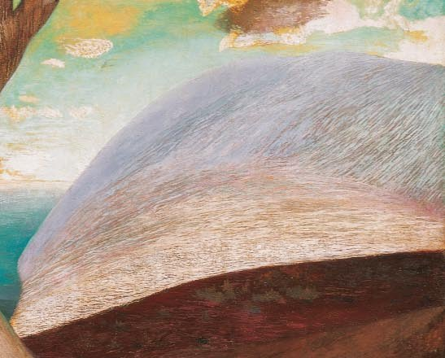
A magányos cédrus, részlet: a hegy íves vonalkákból áll, a színe sávonként változik.
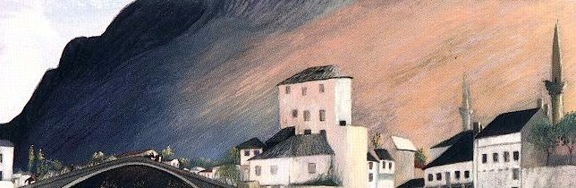
Római híd Mosztárban, részlet: indigó és lazacszín ferde vonalkái egymás között.
Szépművészeti Múzeum, Csontváry 170 (2023): videók és kerekasztal-beszélgetés (Szűcs György, Gergely Mariann, Bellák Gábor, Gerlóczy Gábor, Puntigán József, Molnos Péter).
MEK 21227: Csontváry-tanulmány, a Vihar fejezet (értelmezés, nem tény).
MEK 01314: A magányos cédrus elemzése (Romváry Ferenc, Németh Lajos és Major Jenő nyomán): a vonalkás ecsetkezelés, a törtszínek és az „esti pirkadat” fénye.
Csontváry anyaghasználata (csontvary.com): az 1964-es és 1967-es vizsgálat (tempera az olajban, lakk nélkül) és a 2009-es pécsi XRF-mérés ismertetése. A textilfestékekről szóló rész a szerző saját, vitatott feltevése, erre a játék nem épít.
„Oil paint”, blendi / Patch: MIT licenc. Az ecsetlap, a festékfoltok, a három keverék, a fény, a fehérek kifutása és a remegésmérő ötlete innen jön.